Development and use of (Serious) Games in Research
Stephen Thompson
Centre for Advanced Research Computing
Today’s Talk
- (Re) Introducing Stephen Thompson
- Work to date - serious games to study key hole surgery.
- Opportunities to participate:
- A literature review on game development in research.
- Upcoming project - Exergaming: a serious game for dizziness disorder rehabilitation #1137.
Introducing Stephen
Senior Research Software Engineer Since October 2023
Background in augmented reality for keyhole surgery.
informus, education, EMAP, sense-base.
Human Interest 0 - Background
Human Interest 1 - My Summer 👎
Usual summer; camping and water sports.
 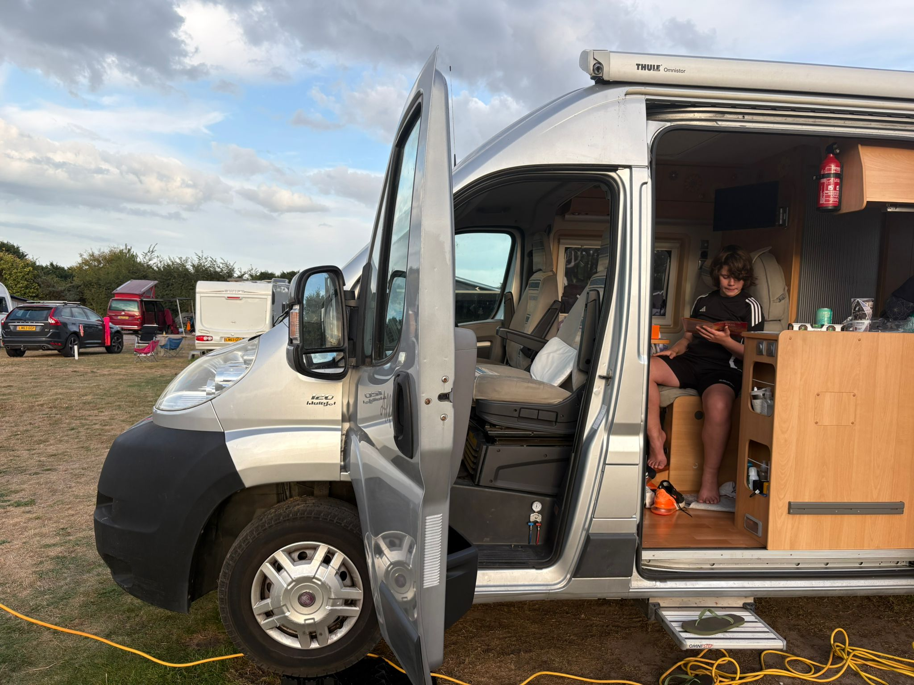
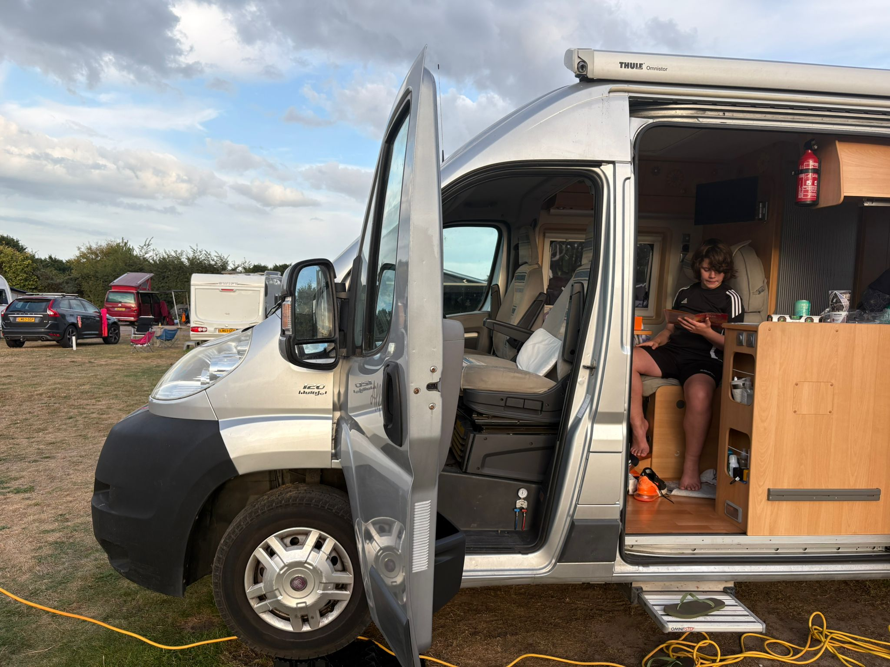
 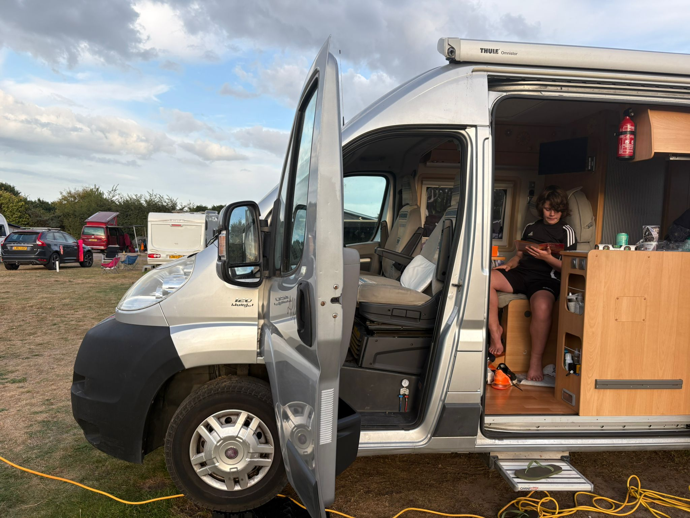
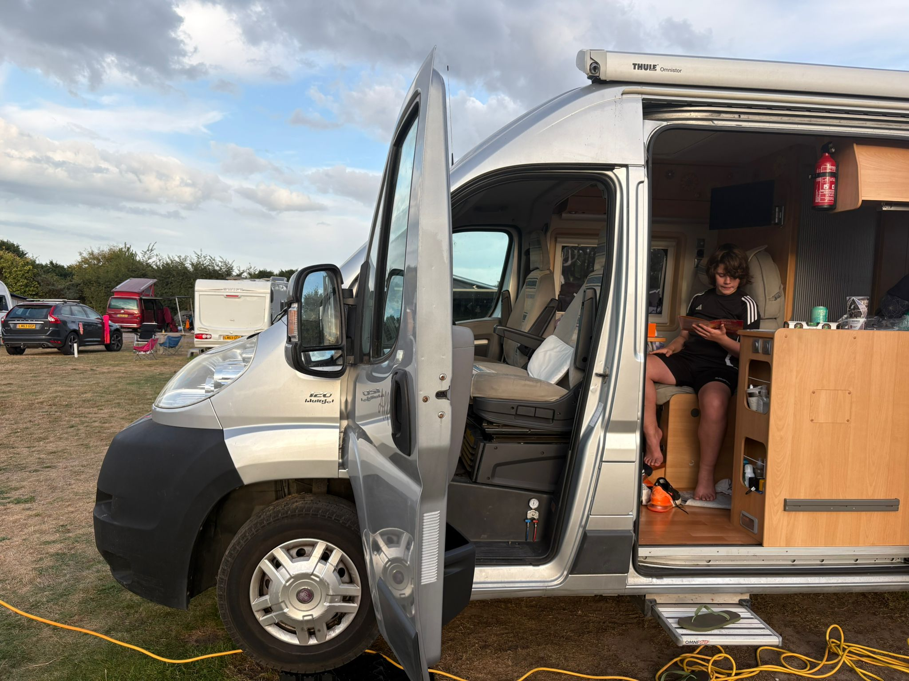- This summer: 👨👨👧👦 🏥🦴🧑🔧🚗 = less camping less water.
Human Interest 2 - My Summer 👍
More time for Cricket.
🦅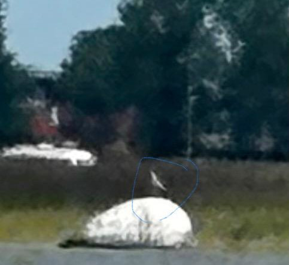
Human Interest 3 - My Summer 👍
- 🚴 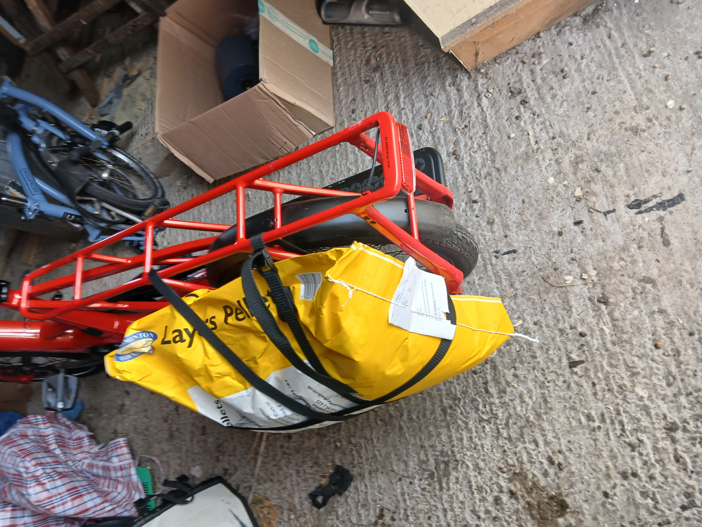
- 🐔 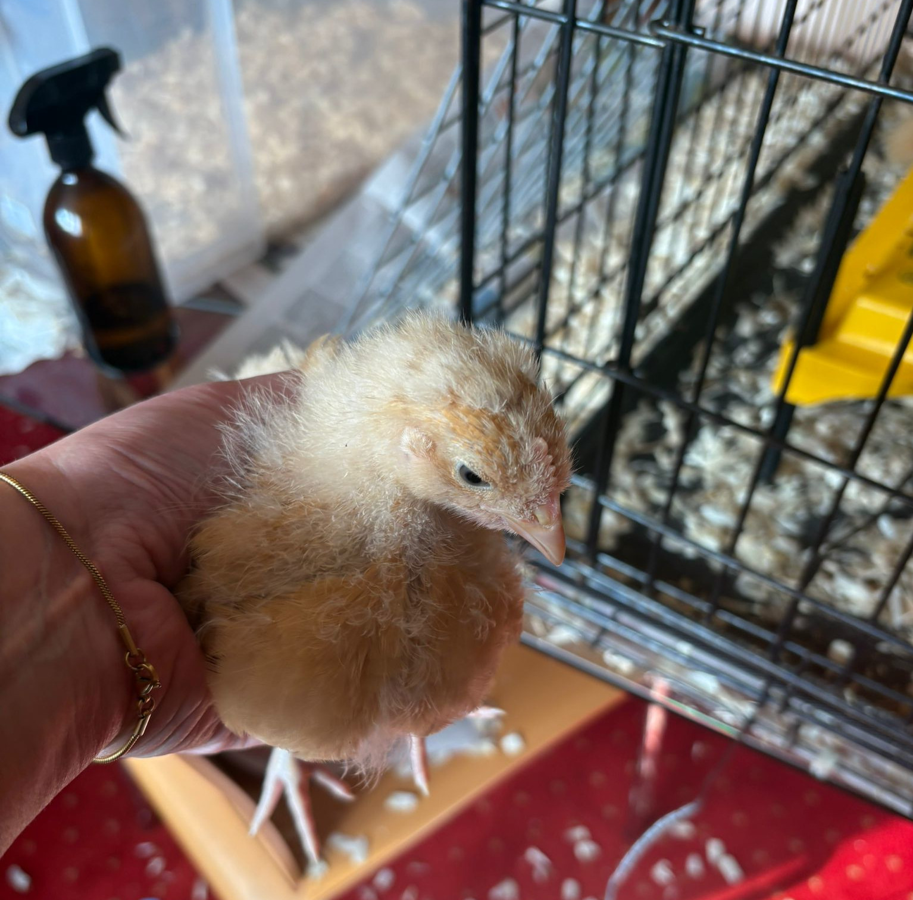
Games for Teaching and Research
- Research: how people collaborate with intelligent machines.
- 2019 - SciKit-Surgery F.R.E.D.
- Developing an effective method to teach the statistics of point (fiducual) based registration (during covid lockdown).
- Uses a game for formative assessment.
SciKit-Surgery F.R.E.D.
SciKit-Surgery F.R.E.D. Results
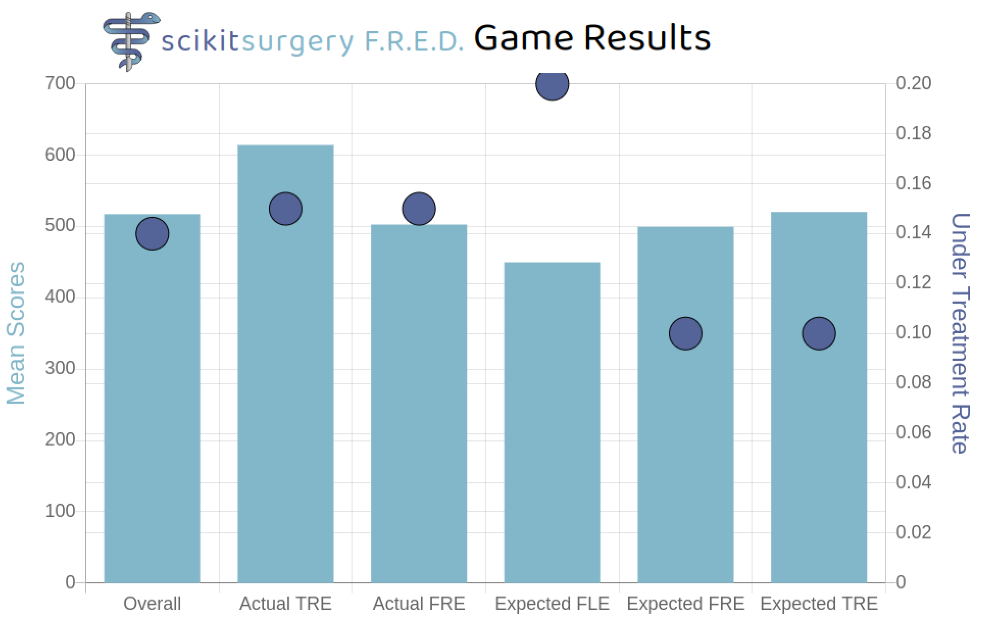2023 Blood Vessel Game: Phoebe Whitley
Publication - JMIR Serious Games
Adding a self citation:
2024 Vessel Game - Connor Creasy
2024 Vessel Game Results 0
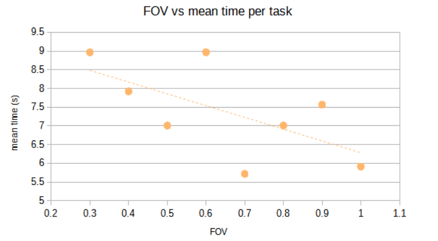2024 Vessel Game Results 1
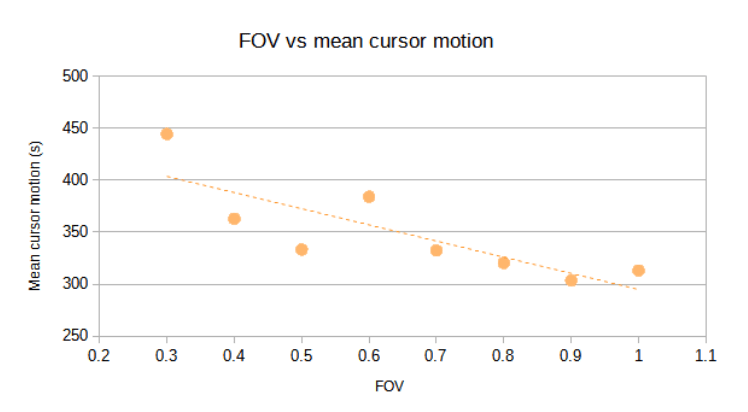2025 Blood Vessel Game: Aayushi Oza
file:///home/thompson/software/Vessel-Game-Project/index.html
Distraction Results
- Generally similar to past games but inconclusive.
- Difficult to recruit surgeons.
- Opensource analysis tools - streamlit
Distraction Results
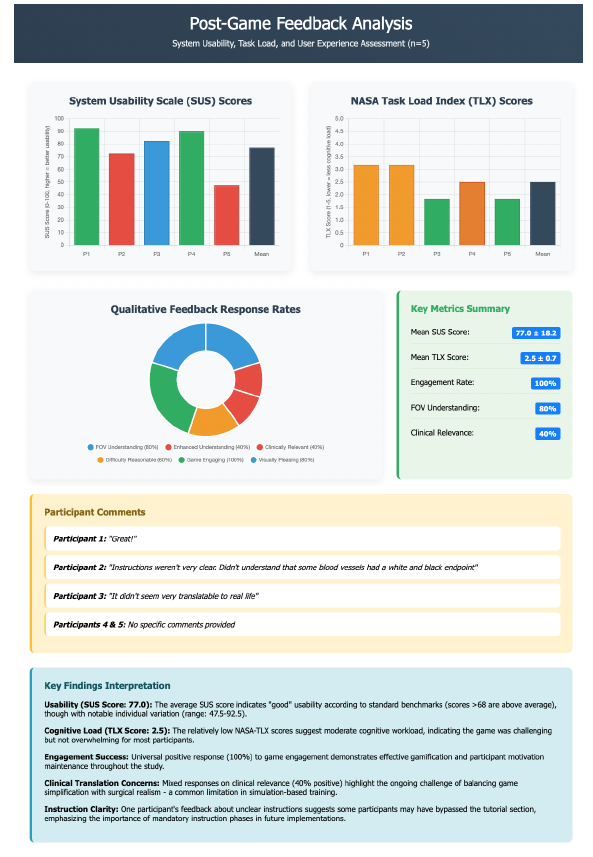
Summary of work to date
- Serious games can be used to create publishable data for surgical applications.
- Serious games make a fun and achievable MSc project.
- Recruiting sufficient surgeons is the main challenge.
Game Engines in Research
- What game engines feature in research outputs (publications)?
- Task: perform a systematic literature review of game engines use.
Game Engine Literature Review
Get involved.
- Read some papers, submit reviews.
- Improve website design.
- Implement searches of other databases.
- Aiming for a publication sometime in 2026.
Upcoming gaming projects.
- October 2025 - Exergaming: a serious game for dizziness disorder rehabilitation #1137.
- A series of minigames using a Tobii eye tracker to aid peadiatric treatment.
- Hardware interface / game design. 50% FTE for 12 months.
With thanks to:
Aayushi Oza
Connor Creasy
Phoebe Whitley
Matthew Clarkson